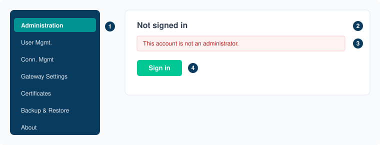
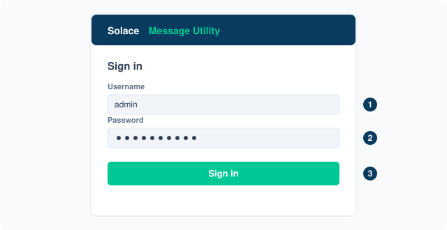
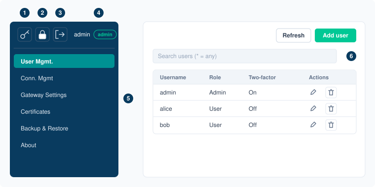
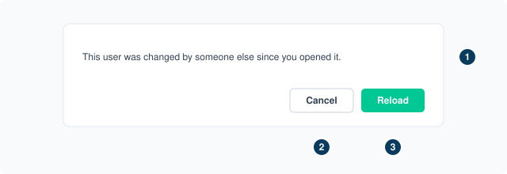

The administration app is where an administrator looks after a Provisioned gateway: its users, the brokers they reach, the gateway's settings, its certificates and its backups. This chapter covers who may open it, how to sign in, how to find your way around, and what every administration page has in common.
The administration app needs an administrator's session on the gateway. The gateway gives it to administrators only, and it never connects to a broker. Without a session, each page shows a gate in place of its content, and the first page, Administration, shows Not signed in.
What an operator sets up outside these pages, such as the environment variables, the first administrator account and recovery, is in the Provisioned mode guide.
The administration app is a separate app from the one people use to browse queues. It lives at /solAdmin on the gateway, for example https://your-gateway/solAdmin.
You are signed in as bob, which is not an administrator. and offers Back to the app.
This page is the signed-out screen and nothing more. While an administrator is signed in, it is hidden and the sidebar starts at User Mgmt.. It comes back when you sign out.
The message under the heading is one of these:
| Message | Meaning |
|---|---|
You must change your password before you continue. | The account has to set a new password first. The button reads Change password and leads to the gateway's password page. |
This account is not an administrator. | You hold a session, but the account is not an administrator. Ask an administrator to give it that role, or use an administrator's account. |
The gateway could not be reached. | The browser could not contact the gateway. Check the address and your network, then reload the page. |
The gateway did not answer in time. If this was a change, it may still have been applied: reload to see where it stands before you try again. | The gateway took too long to answer. Reload the page. |
The gateway sent a response this page cannot read. | Something between you and the gateway, such as a proxy, answered in place of it. Ask whoever runs the gateway. |
Too many requests. Wait a minute and try again. | The gateway limits how often one address may ask. Wait, then reload. |
Any other refusal shows the message under Other messages below, or Unexpected answer from the gateway (HTTP 500). with the status number it answered.
Sign-in does not happen inside the administration app. It happens on the gateway's own sign-in page, the same page the main app uses, and the gateway brings you back to /solAdmin when you are done.
/solAdmin on your gateway. With no session, the gateway sends you to its sign-in page. You can also press Sign in on the Not signed in card.
A refused sign-in shows a red message above the fields, or a page of its own:
| Message | Meaning and what to do |
|---|---|
Sign-in failed. Check the username and password. | One of the two is wrong. The gateway does not say which. |
Too many attempts. Try again in 30 seconds. | Too many wrong answers in a row, for this account or from this address. The number of seconds is the wait that applies, and it grows with each further failure. Wait, then try again. |
Sign-in unavailable: Sign-in could not be checked. Try again. | The gateway could not read its user list. Try again, and tell whoever runs the gateway if it persists. |
Too many requests: Too many requests from this address. Wait a minute and try again. | The gateway limits how many sign-in requests one address may make. Wait a minute. |
Request refused: This form was submitted from another site. or The form could not be read. | The sign-in form came from somewhere other than the gateway. Open /solAdmin again and sign in from the gateway's own page. |
The gateway can require a new password before it lets an account do anything else. After a correct sign-in it then shows Change password with the line You must set a new password before you continue. and no way to skip it. Opening /solAdmin with such an account leads here too.
| Field | What it is | What it accepts |
|---|---|---|
| Current password | The password you signed in with. | Up to 128 characters. |
| New password | The password to use at your next sign-in. | At least 12 characters unless the gateway's settings ask for more, and at most 128. The page prints the exact range under the fields, for example 12 to 128 characters. |
| Confirm new password | The same password again. | The same range, and it must match. |
Press Change password. The gateway then returns you to the administration app. A password you change on your own initiative, from the sidebar (see Finding your way around below), shows the same page with a Cancel link that takes you back unchanged.
A refused change shows one of these:
| Message | What to do |
|---|---|
The current password is not correct. | Retype it. A wrong current password counts as a failed sign-in, with the same waits. |
The new passwords do not match. | Type the same password in both boxes. |
The new password must be 12 to 128 characters. | Choose a password inside the range the message names. |
The new password must differ from the current one. | Choose a different password. |
The password could not be saved. or The password could not be checked. Try again. | The gateway could not complete the change. Try again. |
Password not changed: Your account was changed while this request ran. Sign in again. | Someone changed your account at the same moment. Sign in again and repeat the change. |
Password not changed: The gateway cannot record changes right now, so it refused this one. Try again later or tell an administrator. | The gateway is set to refuse changes while its audit log cannot be written. |
Password not changed: The gateway's user file was changed outside the gateway. An administrator must restart the gateway before passwords can be changed. | An administrator must restart the gateway from Gateway Settings or on its host. |
A password change ends your other sessions. The browser you changed it in stays signed in.
Two-factor sign-in asks for a six-digit code from an authenticator app after the password. Whether you must use it depends on a setting that an administrator chooses in Gateway Settings. The Provisioned mode guide explains the choices.
When your account has it, the gateway shows Two-factor sign-in after a correct password:
Enter the 6-digit code from your authenticator app, or one of your recovery codes.A wrong code shows The code is not correct. and counts as a failed sign-in. Start again returns to the password step. A sign-in that waits too long for its code is dropped, and you start again.
When the gateway requires two-factor and your account has none yet, the sign-in continues on Set up two-factor sign-in:
You can set it up, or set it up again, at any time from the sidebar (see below). The gateway first asks you to confirm it is you, with your Password and, when two-factor is already on, your Current code or a recovery code. The page then offers Continue and a Cancel link, and a wrong answer shows The password or the code is not correct. Setting it up again replaces the authenticator and its recovery codes, and signs you out everywhere else.
If the gateway is set to refuse changes while its audit log cannot be written, a recovery code cannot be used and the page says so. A code from the authenticator app still works.
Once you are signed in, the gateway's pages are in the sidebar, under your account.

Signed in as admin.The three icons and your name stay at the top of the sidebar on every page.
When the sidebar is collapsed, the name is hidden and the icons stack one above the other.
| Sidebar entry | What it is for |
|---|---|
| User Mgmt. | The people who sign in: their passwords, roles, the modules they may open and the queues they may reach. |
| Conn. Mgmt | The brokers the gateway reaches for its users, with their Message VPNs and credentials. |
| Gateway Settings | The gateway's own settings, and the button that restarts it. |
| Certificates | The gateway's certificate and the broker certificate authorities it trusts. |
| Backup & Restore | Saving the gateway's configuration to an encrypted backup, scheduling backups, and restoring one. |
| About | The app's version, and this manual in its Help tab. |
Each of these has its own chapter in this manual.
While no administrator is signed in, each page shows a gate with the heading Administrator Sign-in Required and a line that names the page's job. It means the same everywhere: sign in as an administrator.
| Page | The line under the heading |
|---|---|
| User Mgmt. | Sign in as an administrator to manage users. |
| Conn. Mgmt | Sign in as an administrator to manage connections. |
| Gateway Settings | Sign in as an administrator to change the gateway settings. |
| Certificates | Sign in as an administrator to see or change the gateway's certificates. |
| Backup & Restore | Sign in as an administrator to back up or restore the gateway configuration. |
A session ends in these ways:
The page does not poll the gateway. It notices when you next do something that needs the gateway, such as pressing Refresh or saving. A toast then says Your session has ended. Sign in again., stays up for five seconds, and the app returns to Not signed in. A password typed into the user form is cleared. Press Sign in, and the gateway brings you back to the administration app.
Some changes to your own account end your session on purpose. Each shows a toast that says so, and returns you to Not signed in:
Password changed. Sign in again. or Administrator flag changed. Sign in again.Delete your own account "admin"? You will be signed out.: Account deleted. You have been signed out.Two-factor sign-in reset. You have been signed out.The gateway reads the administrator flag on every request. If another administrator takes it from your account, your next action in a page is refused with This needs an administrator., shown where that page shows its errors. Reload the page in your browser: the gateway then answers Administrator access required, as for any account that is not an administrator. If your account is deleted instead, opening /solAdmin again ends the session and sends you to the gateway's sign-in page.
The gateway also refuses to remove the last administrator: At least one administrator must remain.
The lists on User Mgmt. (by username) and Conn. Mgmt (by broker name or hostname) have a search box above the table. Its hint reads Search users (* = any) or Search connections (* = any).
* stands for any run of characters. ops*prod finds ops-eu-prod but not prod-ops.No users match "zed". or No connections match "zed". With nothing loaded it says No users. or No connections.The search only narrows what you see. It is not the stricter matching of the rows that grant access to queues, which is anchored and respects letter case.
Each row of a list ends in small buttons. Hold the pointer over one to read its name, for example Edit user "alice" or Delete user "alice". A user whose two-factor sign-in is on also has a Reset two-factor for user "alice" button.
Where a form takes a list, such as the entitlements of a user or the Message VPNs of a connection, it shows a row of boxes for each entry, headed by the column names, with an add button below. A list with no rows shows a short note saying what that means. The cross at the end of a row, whose hint is Remove row, deletes that row from the form. A row whose boxes are all empty is ignored when you save. Nothing is saved until you save the form.
Before something that is hard to undo, the app asks a question in a small window and waits. Its two buttons are Cancel and a button named for the action, such as Delete, Reset or Reload. Examples are Delete user "bob"? and Reset two-factor sign-in for "bob"? They will have to set it up again.
Each user, each connection, the gateway settings and the backup schedule carry a version that the page reads with them and sends back with your save. The first save wins. If someone else saved the same thing after you opened it, your save is refused, not merged, and the page asks:

This user, This connection, This settings page or This schedule, and continues was changed by someone else since you opened it.The same dialog appears when you press Delete on a row that changed after the list loaded. The unit is the whole record, so two administrators who edit different fields of one user still meet this dialog. Two administrators who edit different records never do.
If the other administrator deleted the record instead, a toast says This user was deleted by someone else. (or This connection ...) and the list reloads without it. Adding a name that exists already says User "carol" already exists. Use Edit to change it. or Connection "east-prod" already exists. Use Edit to change it., whoever added it and when.
An import in Backup & Restore is checked the same way. It refuses with The gateway's data changed since the preview. Run the preview again. when a section it would replace changed after the preview. The Provisioned mode guide has the details.
The gateway keeps the users, the connections, the backup schedule and its settings in files on its host, and its certificate and trust files in another folder. These messages mean the gateway could not use one. An administrator cannot cure the cause from these pages: tell whoever runs the gateway. The gateway's log has the details in every case.
| Message | Meaning and what to do |
|---|---|
A data file (users, connections or backup settings) was edited on the gateway host since the gateway loaded it. Restart the gateway to load that edit, then make your change here. | A data file was changed outside the pages. Nothing for those files can be saved until the gateway restarts. |
config.yaml was edited on the gateway host since the gateway loaded it. Restart the gateway to load that edit, then make your change here. | The same for the settings file. Gateway Settings shows it as a banner and blocks saving until the restart. |
The gateway could not write its data files, so nothing was changed. Its log has the cause. | The write failed, for example on a full disk, and was rolled back. Try again once the cause is fixed. |
The gateway cannot write its audit log and is set to refuse changes until it can. Its log has the cause. | The choice Refuse changes until it can be written is set in Gateway Settings and the audit log is failing. Changes wait until it can be written. |
The gateway cannot read its config.yaml. Its log has the cause. | The settings file cannot be read. Nothing can be saved to it. |
The gateway's certificate or trust files are read-only on its host, so they cannot be changed here. | The host forbids writing them. Retrying does not help until whoever runs the gateway makes them writable. |
The gateway could not write its certificate or trust files, so nothing was changed. Its log has the cause. | The write failed and was rolled back, so the old certificate and authorities still stand. |
The gateway could not write the backup. Its log has the cause. | A backup could not be saved. |
The gateway could not complete the request. Its log has the cause. | An error the gateway did not expect. Try again, then ask whoever runs the gateway. |
These refusals can appear on any page, as a toast or under the form you were saving:
| Message | Meaning and what to do |
|---|---|
Your session has ended. Sign in again. | See When your session ends. |
This needs an administrator. | Your account is not an administrator, or has lost the administrator flag. See above. |
You must change your password before you continue. | Press Change password on Not signed in, and change it. |
Not found. It may already have been removed. | The record is gone. Reload the page. |
This was changed by someone else since you opened it. Reload to see the current version. | The record changed. Reload the page and repeat your edit. |
That name already exists. Use Edit to change it. | Open the existing entry instead of adding it again. |
This change would lock this browser out of the gateway. | The gateway refused a setting that would shut you out. It usually names the setting and the reason. |
The gateway refused a cross-site request. | The request did not come from the gateway's own page. Reload the page from the gateway's address. |
The request is too large. or The gateway rejected the request as malformed. | The gateway could not accept what the page sent. Reload and try again. |
The page did not send the version it was working from, so the gateway refused the change. Reload the page and try again. | Reload the page. |
The Troubleshooting section of the Provisioned mode guide covers the operator's side of these refusals.